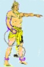

Desiraju
Hanumanta Rao...
.......
was a personality in Telugu Theatre, TV, Film and literary circles, of Andhra
Pradesh State of India. Encouraging many a writer, actor, director into
Theatre, TV & films, he launched novices into stardom. Well-read
in classical and traditional literature, his interests remain in Vedanta, literature and
other performing arts.
......
retiring from service and the active theatre, he was participating in
digitalizing Indian classics and culture. The good saying of "Every generation
shall have its own translation..." has enthused us to takeup
this work in this way....
......with an intention to reach the very casual readers, besides scholars, Valmiki Ramayana the first epic poem of India, is being rendered for an easy readability and comprehension for all those, including the present day Indians, to whom the Sanskrit has become an
antique language.
He passed away in 2010.
The e-text is available at ValmikiRamayan.net .... Let Hanuma take you there... 